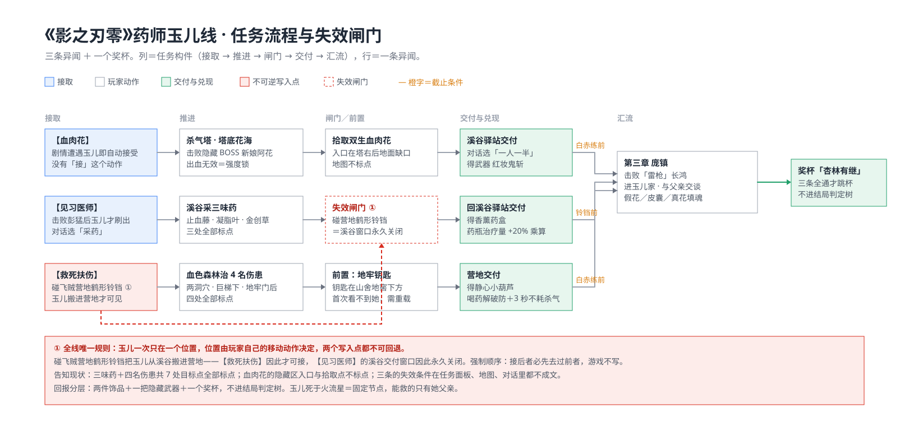

拆的粒度是一条任务线——三条异闻加一个奖杯，横跨第一到第三章。整款游戏的拆解框架（六层、四层）套不到这个粒度上，因为它们默认对象是稳定的，而任务线最关键的一维是它会失效。这里改用任务策划日常在做的那八个视角：目的、授予、结构字段、动线、状态读写、告知、兑现、失效。
| 视角 | 问的问题 | 产出物 |
|---|---|---|
| 1 目的 | 这条任务在这一章里承担什么职能：教学／区域解锁／叙事补白／奖励投放／节奏调剂。砍掉它会缺什么 | 一句话设计意图 |
| 2 授予 | 谁给、凭什么条件给、玩家有没有「接」这个动作 | 触发条件与授予形式 |
| 3 结构字段 | 任务由哪些状态机构成：目标计数、前置、后续、图钉策略、日志文本 | 策划填的那张表 |
| 4 动线 | 起点—途经—终点在地图上的关系，是否压在主线必经路上，往返几次，跨几章 | 空间走查 |
| 5 状态读写 | 这条任务读哪些世界状态、写哪些世界状态；NPC 位置与区域状态是否被改写；写入能否回退 | 读写表 |
| 6 告知 | 上述每条信息玩家从哪个界面拿到；缺口由什么代偿——环境线索、自己试错、还是第三方攻略 | 分级与缺口清单 |
| 7 兑现 | 奖励落进哪个循环：回复续航／能力解锁／成长数值／成就／结局 | 奖励流 |
| 8 失效 | 哪些动作会让它断掉，断掉的可感知性有多强，补救成本多大 | 失效面 |
3 和 5 是策划视角独有的两层，剧情攻略写不到；6 负责把 3 与 5 里的隐藏状态折算成玩家的可见性。任务设计的绝大多数问题都出在第 6 步，而玉儿线最有价值的地方在 5 与 6 之间：它写入的状态是 NPC 位置，而 NPC 位置写不进任务面板。
三条独立异闻，共用一个奖杯。全部事实：
| 节点 | 在哪接 | 玩家做什么 | 交付 | 失效 | 兑现 |
|---|---|---|---|---|---|
| 〇 相遇 | 第一章「追兵」沿绳索攀下悬崖后，玉儿在溪谷营地 | 无。一句人物动机：她偷到药方，认定血肉之花能治父亲的昏睡怪病 | — | — | 无 |
| 【血肉花】 | 剧情遇到玉儿时自动接受，没有对话选项 | 悲泣溪谷·杀气塔底层花海击败隐藏 BOSS 新娘阿花，拾取双生血肉花。入口在一层铃铛绕到塔右后的地面缺口，沿木桥滑下 | 回溪谷驿站，对话可选「一人一半」 | 白赤练战前未交付即断 | 武器红妆鬼斩 ＋ 同名奖杯 |
| 【见习医师】 | 击败主线 BOSS「斧老大：彭猛」后玉儿才刷在驿站，对话选「采药」 | 溪谷三味药：止血藤在关押处出口下方河道，凝脂叶在远眺龙柱处过桥贴左墙跳平台，金创草在龙柱龙头像正对的道路上。三处全部有地图标点 | 回溪谷驿站 | 碰飞贼营地鹤形铃铛那一刻：玉儿被搬走，交付入口消失 | 饰品香薰药盒：药瓶治疗量 +20%（乘算）；打磨「·改」+30% 并附带霸体 |
| 【救死扶伤】 | 血色森林飞贼营地铃铛旁。第一次去见不到玉儿，须先传去别的铃铛再传回来她才刷新 | 救治 4 名伤患：亡命徒陷阱铃铛旁一大一小两个洞穴、悬崖山舍巨梯下方、营地上锁门另一侧。第 4 人需要盗贼营地地牢钥匙，钥匙在山舍地窖下方。四处全部有地图标点 | 回营地 | 白赤练战前未交付即断 | 饰品静心小葫芦：喝药立即解除破防，3 秒内不消耗杀气 |
| 尾段 | 第三章庞镇，击败「雷枪」长鸿后 | 进正前方的玉儿家，与其父交谈 | — | — | 奖杯「杏林有继」在此刻跳出，要求三条全通 |

五条职能里，1 与 3 是系统层面的，2 与 4 是节奏层面的，5 是叙事层面的。一条支线同时占用五个职能，这是它值得单独拆的原因。
| 形态 | 本线实例 | 玩家的动作 | 隐含条件 |
|---|---|---|---|
| 自动授予 | 【血肉花】 | 没有「接」这个动作，剧情遇到就进日志 | 剧情进度 |
| BOSS 状态解锁 ＋ 对话选项 | 【见习医师】 | 要选对话里的「采药」 | 彭猛是否已死 |
| NPC 位置刷新 | 【救死扶伤】 | 传走再传回，她才出现 | 玉儿当前在哪个区域、交互对象是否已重载 |
三条没有一个要求玩家去任务板主动寻找，授予成本压到零。代价同向：三条能不能做，全由玩家看不见的状态决定——剧情进度、某个 BOSS 的死活、自己刚才传送去了哪。触发层的便利与告知层的缺失是同一次设计决定的两面。
这一节是拆解里最接近策划交付物的部分——同一条任务线在数据上由哪些构件组成，每个构件被填成了什么值。
| 字段 | 血肉花 | 见习医师 | 救死扶伤 |
|---|---|---|---|
| 接取条件 | 剧情遭遇，自动写入日志 | flag(彭猛已死) && 选项「采药」 | NPC 可见(玉儿 @ 飞贼营地)，需一次传送重载 |
| 目标类型 | 战斗 ＋ 拾取 | 采集，计数 ×3 | 交互救治，计数 ×4 |
| 完成判定 | 交付道具给玉儿 | 交付 3 味药 | 4 名伤患全部处理 |
| 前置读取 | 杀气塔隐藏区可达 | 主线 BOSS 状态 | 跨章传送；盗贼营地地牢钥匙（在山舍地窖下方） |
| 写入状态 | 武器红妆鬼斩、任务道具、尾段 flag | 饰品香薰药盒；玉儿位置 不变 | 饰品静心小葫芦 |
| 后续链 | 第三章庞镇·与父亲交谈 → 杏林有继 | 汇入杏林有继 | 汇入杏林有继 |
| 图钉策略 | 隐藏区入口与拾取点都不标点 | 三味药全部标点 | 四名伤患全部标点 |
| 失效字段 | 白赤练战前未交付 | 玉儿离开溪谷驿站 | 白赤练战前未交付 |
三条共用一套字段，差异只落在两处：接取条件的类型（剧情 flag／BOSS flag／NPC 可见性）与目标的动词类型（战斗＋拾取／采集／救治）。一个计数、一个 flag、一个可见性判定，就是这类任务线的全部构件；剩下都是内容与文案。
字段表有个直接用法：把「失效字段」这一栏单独抽出来看，本线三条里有一条填的是位置条件、两条填的是 BOSS 进度条件，三种条件混用而界面用同一套方式呈现——这是后面所有告知问题的源头。
顺路度：三味药全压在溪谷探索的必经面上，几乎不用专程；四名伤患分散在血色森林四个点，其中一处带钥匙前置，会产生一次非剧情性往返；阿花在隐藏区，是全线唯一需要专程找入口的一段。
| 钥匙类型 | 本线实例 | 它锁住什么 | 玩家的感知 |
|---|---|---|---|
| 道具钥匙 | 盗贼营地地牢钥匙（山舍地窖下方） | 第 4 名伤患 | 门锁着，找钥匙——常规做法，玩家知道自己在等什么 |
| 强度钥匙 | 阿花战（出血无效，建议武器先升级、备凝锋丹） | 双生血肉花的获取 | 打不过就是打不过，反馈立刻可见 |
| 位置钥匙 | 玉儿当前在哪个区域 | 【见习医师】能否交付、【救死扶伤】能否接取 | 完全不可见，而且开锁与关窗是同一个动作 |
前两种是常规设计，第三种最少见：钥匙是玩家自己的移动动作，用它打开一扇门的同时永久关上另一扇。
| 当前状态 | 触发（单向） | 写入 | 同时关闭 |
|---|---|---|---|
| 玉儿在溪谷营地（只给动机） | 攀下悬崖的剧情遭遇 | 【血肉花】进日志 | — |
| 玉儿在溪谷驿站 | 击败主线 BOSS 彭猛 | 可接【见习医师】、可交付【血肉花】 | — |
| 玉儿在飞贼营地 | 触碰血色森林·飞贼营地的鹤形铃铛 | 可接【救死扶伤】 | 【见习医师】的交付入口永久消失 |
| 玉儿在庞镇（已故，皮囊） | 第三章剧情推进 | 尾段：与父亲交谈 → 奖杯 | 本线全部窗口 |
读取侧：彭猛存活、主线 BOSS 进度、玉儿当前位置、地牢钥匙持有。写入侧：三件装备、两条任务 flag、一个奖杯，以及「玉儿在哪个区域」这个变量。这条线唯一真正被改写的世界状态，就是 NPC 的位置。
先给引导分级，再填本线的实际得分。
| 级 | 内容 | 本线是否做到 |
|---|---|---|
| G0 | 只有 NPC 头顶标记，交付后不再提 | 白色支线的普遍处境 |
| G1 | 给地点（地图标点目标） | 做到：三味药 ＋ 四名伤患共 7 处全部标点 |
| G2 | 给顺路（目标点压在主线必经动线上） | 做到：溪谷采集段几乎全程顺路 |
| G3 | 给条件（要几件、要什么状态、封闭区域需要哪类能力） | 部分做到：日志写明计数目标，地图标注打不开的机关需要哪类影之武装；钥匙锁与强度锁都在这一级 |
| G4 | 给时限与失效（写明截止节点，或给出「你真的要前进吗」类提醒） | 为 0：三条的失效条件在任务面板、地图、对话里全部不成文。全局只有两处同类提示——进幻影庄园开门时弹「尚有未竟之事」，以及终局入口的确认提示 |
| 缺口 | 具体表现 | 玩家的实际反应 |
|---|---|---|
| 路径引导 | 血肉花的隐藏区入口与拾取点都不标点。「绕到塔右后的地面缺口、沿木桥滑下到塔底」这一段游戏不说 | 三条里唯一要打隐藏 BOSS 的那条，恰好是唯一不给点位的那条；找不到入口就判定成「这条做不了」 |
| 刷新条件 | 「传走再传回才见得到她」没有任何提示 | 判定成「这里没人」，然后走开 |
| 失效条件 | 三条的失效全部不成文 | 只能靠试错，或查攻略 |
| 状态代价 | 碰营地铃铛＝搬走玉儿＝同时关掉上一条的交付窗口，而这一切没有任何表征 | 玩家那一下以为自己在开传送点 |
方向引导与路径引导要分开记账。地图标点给的是方向（目标在哪个坐标），不说的是路径（从哪个缺口下去、要不要先拿钥匙）与状态（这个坐标上的人此刻还在不在）。本作在方向这一层做得相当慷慨，缺口全在状态层——地图能标一个坐标，标不出这个坐标上的人会不会走。
判定形态＝位置制。失效由 NPC 位置规则与玩家移动动作相乘得出。【救死扶伤】「第一次到营地见不到玉儿」与【见习医师】「碰营地铃铛就断」是同一条规则的两面。
后果：错过任一条＝线断，「杏林有继」本周目拿不到，只能读旧档或进 NG+。白金做法是每区域起点终点各留一个手动存档位。
为什么没写：这类失效写不进任务面板——写出来就等于宣布存在一条强制顺序，而这条顺序的价值恰恰在于玩家自己撞上。缺口在机制形态与告知形态不匹配：由系统规则相乘得出的失效，没有对应的文案位置。文案偷懒的说法不成立，位置制的失效在现有界面里没有可写的格子。
| 层 | 内容 | 读数 |
|---|---|---|
| 叙事 | 庞镇反转：那里的鲜红血肉花是假的，归家的玉儿已是梦差操控的皮囊，魂手里那朵真花把意识填回人体，父亲得救并向她道别。玉儿死于火流星＝固定节点，救不了她 | 选择只作用在最后救父亲那一步。叙事层给的是「救不了她」，机制层给的是「能不能救他」 |
| 战斗 | 无追加战斗阶段（对照：沐小葵线集齐 5 条红丝带会给 BOSS 追加阶段） | 空格即结论：这条线不改动战斗 |
| 成长 | 香薰药盒（+20% 乘算，打磨后 +30% ＋霸体）、静心小葫芦（喝药解破防 ＋ 3 秒不耗杀气）、红妆鬼斩 | 两件饰品都作用在喝药上，与第 2 节的投放职能完全一致 |
| 元层 | 奖杯「杏林有继」 ＋ 「红妆鬼斩」 | 不进结局判定树。本作的结局由「湖心秘密」与「血脉觉醒（五处龙柱试炼）」两个关键支线的状态组合决定，玉儿线不在其中——它的完成度只兑换成装备与成就 |
这一格值得单独说：任务完成度的回报分成三档——结局分支、装备与成就、叙事去向。玉儿线只拿第二档与第三档。它因此是一个干净的对照样本：一条被认真做成、给了三件实物奖励和一个奖杯的支线，与结局判定完全无关。「完成度换结果」这件事在这条线上走的是成长与成就通道。
判据：换掉虚构层的理由，机制要不要跟着改。要改＝同构；不用改＝借皮；按故事推断会做错＝冲突。
| 节点 | 虚构层说法 | 系统层效果 | 判定 |
|---|---|---|---|
| 相遇 | 药师之女为父寻药 | 不入日志 | 借皮（纯触发铺垫） |
| 血肉花·自动接受 | 她偷到药方，急着抓药 | 任务无条件进日志，玩家无需操作 | 同构：病情越急，越不该让玩家去找任务板 |
| 阿花与双生血肉花 | 药在杀气塔的隐藏区，被一个穿嫁衣的东西守着 | 一场高难战斗（出血无效＝强制换打法）＋隐藏武器＋任务道具 | 同构：「守着药」直接对应机制层的强度锁 |
| 见习医师·接取 | 彭猛死了，溪谷才安全到可以谈生意 | 玉儿的出现条件＝主线 BOSS 状态 | 冲突：故事上讲得通，机制上不告知，玩家会以为这条线不存在 |
| 三味药 | 止血藤、凝脂叶、金创草，全是外伤药 | 采集 ×3，全部标点 | 同构：换成「找三块矿石」，三味药的名与效都要改 |
| 香薰药盒 | 「少女赠香包未果，便依亡母所授之法，制此药盒。'既是药具，便不会再被推辞了吧……'」 | 药瓶治疗量乘算 +20% | 同构最强：物品文本、数值族别、奖杯名「杏林有继」的「继」字，三处指向同一个母亲与同一门医术 |
| 救死扶伤·碰营地铃铛 | 她跟着营地跑，人不见时就是还没安顿好 | 同一个动作搬来她，并永久关闭上一条的交付窗口 | 冲突最强：叙事上她随时在，机制上她一次只在一个位置，迁移由玩家自己触发且不告知 |
| 庞镇·与父亲交谈 | 假花、皮囊、真花填魂 | 这一步才跳奖杯，且要求前两条已完成 | 同构：叙事终点同时是成就终点 |
| 玉儿死于火流星 | 她一定死，玩家救不了她 | 无机制后果，只在救父亲那一步留出选择 | 同构（负向）：叙事层的无力感没有被机制补偿 |
| 断线 | 战局不等人 | 任务永久不可用 ＋ 奖杯丢失 ＋ 只能读档或 NG+ | 冲突：故事给了理由，机制把触发藏在玩家自己的传送动作里 |
比例：同构 6（含 1 个负向）／借皮 1／冲突 3。设计成立。三处冲突同指一个根因：玉儿只有一个位置，而位置规则不写进任务面板。